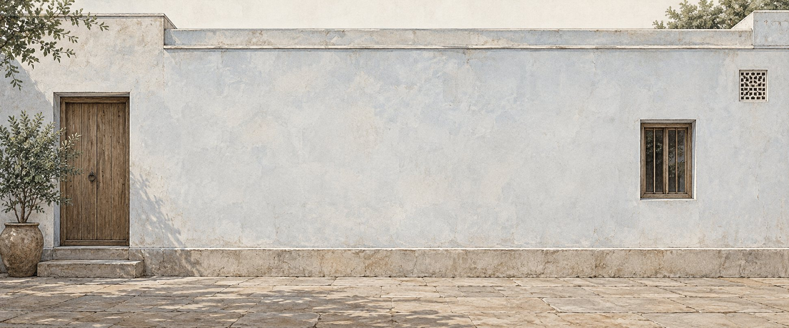

Walls that Breathe Sustainability
Cow dung-based Prakritik Paint in Distemper and Emulsion formats for interior and exterior walls.

An old Indian material idea, reconsidered for modern walls.
Cow dung has been used on Indian walls and floors for generations — as a surface treatment, a renewal ritual, and a quiet form of care. Prakritik Paint carries that material into a contemporary format: two paints, made for brushing on interior and exterior walls.
Two paint formats for interior and exterior walls.

Prakritik Distemper Paint
Eco-Friendly Cow Dung Paint. A paint listed for interior and exterior walls. Supplied in 1, 5, 10 & 20 kg packs.
- Finish
- Matt
- Drying time
- 4 hrs
- Coverage
- 200 sq.ft.**
- V.O.C.
- Negligible

Prakritik Emulsion Paint
Eco-Friendly Cow Dung Paint. A paint listed for interior and exterior walls. Supplied in 1, 4, 10 & 20 litre packs.
- Finish
- Matt
- Drying time
- 4 hrs
- Coverage
- 300 sq.ft.**
- V.O.C.
- Negligible
From a natural material to a finished wall.
Natural material, Prakritik Paint, finished walls.
-
01
Natural material
Cow dung is the material inspiration.
-
02
Prakritik Paint
Available as Distemper and Emulsion.
-
03
Finished wall
Both are listed for interior and exterior use.
Eight benefits of Prakritik Paint.
The eight benefits Gaurikrit associates with Prakritik Paint.
Benefits listed in the Prakritik Paint material.
- 01 Antibacterial जीवाणुरोधी
- 02 Antifungal कवकरोधी
- 03 Eco-Friendly पर्यावरण-मित्र
- 04 Natural Thermal Insulator प्राकृतिक ऊष्मीय इन्सुलेटर
- 05 Cost-Effective किफ़ायती
- 06 Free from Heavy Metals भारी धातुओं से मुक्त
- 07 Non-Toxic गैर-विषाक्त
- 08 Odourless गंधरहित
Colours of India.
Click a swatch to recolour the wall plane. These are editorial design moods — not currently available product shades.

Limewash Editorial colour studyTransforming waste into wonder, one wall at a time.
Gaurikrit Bio Products (OPC) Private Limited — Good for Nature. Good for Life.
Who is Prakritik Paint for?
Homeowners
Explore Prakritik Paint for your space.
Architects & Builders
Discuss product and project requirements.
Institutions / CSR
Talk to Gaurikrit about institutional or sustainability-led projects.
Gaushalas / Partners
Explore collaboration around cow-dung-based bio-products.